my portfolio opens on a note in my handwriting, sitting on the journal i kept as a kid.
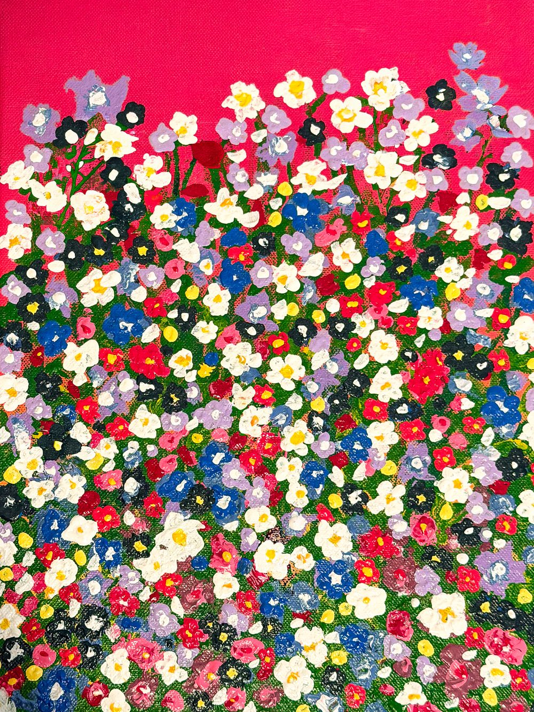
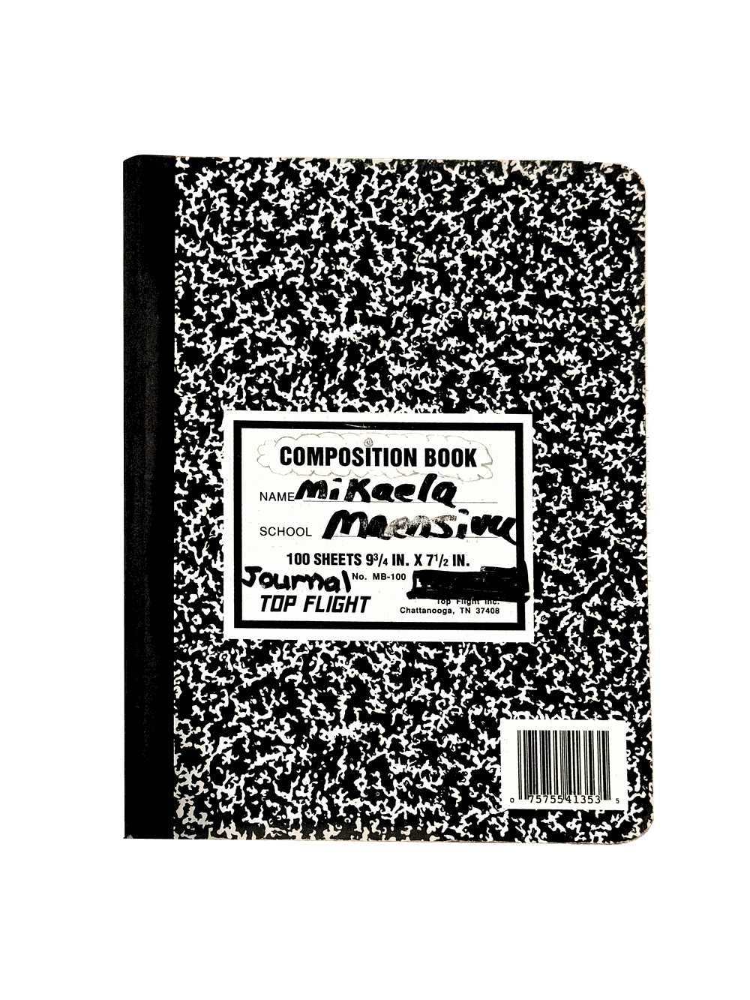
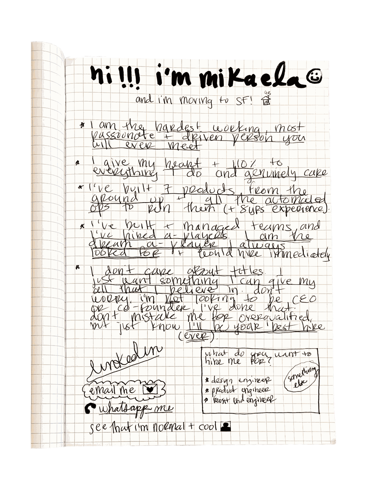
the note is my handwriting now. the journal under it is my handwriting as a kid. the painting behind them is mine too. open the book and there's a video of me actually working, because making things has always been my passion.
anyone can make a good looking site now, so polish isn't what tells you who someone is anymore. effort is. the parts of this site that matter most to me are the parts no tool could make. the handwritten names in the notebook are my actual handwriting. the journal pages and drawings are from when i was a kid, before i knew design was a job. the painting is mine. the video is me working, so you can see the messy middle of how i make things. i left the wobble in on purpose. to me, the sign of craft right now is whether you can tell a person spent real time on something. the tools did a lot of the typing. the hand, the taste, and the years are mine.
three pieces of mechanics. each one is small, each one is real, and each one only works because something real was photographed or traced.
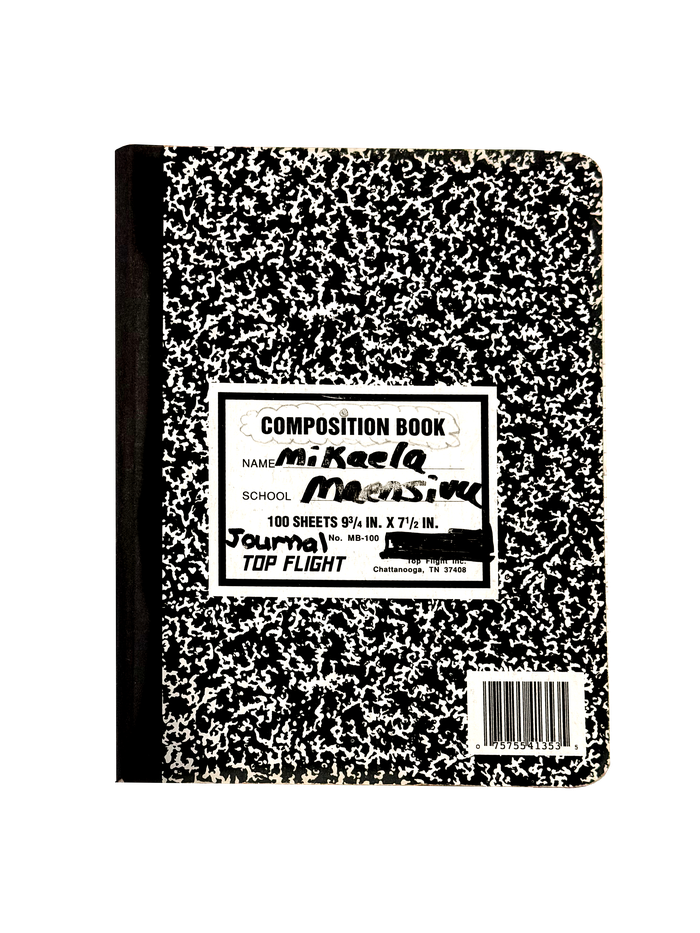
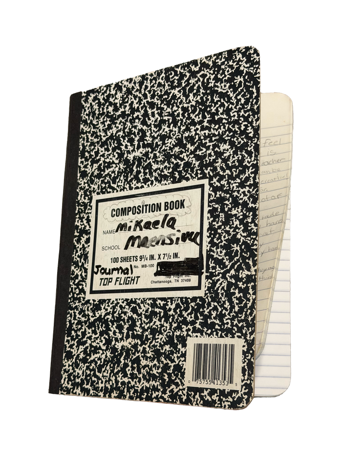
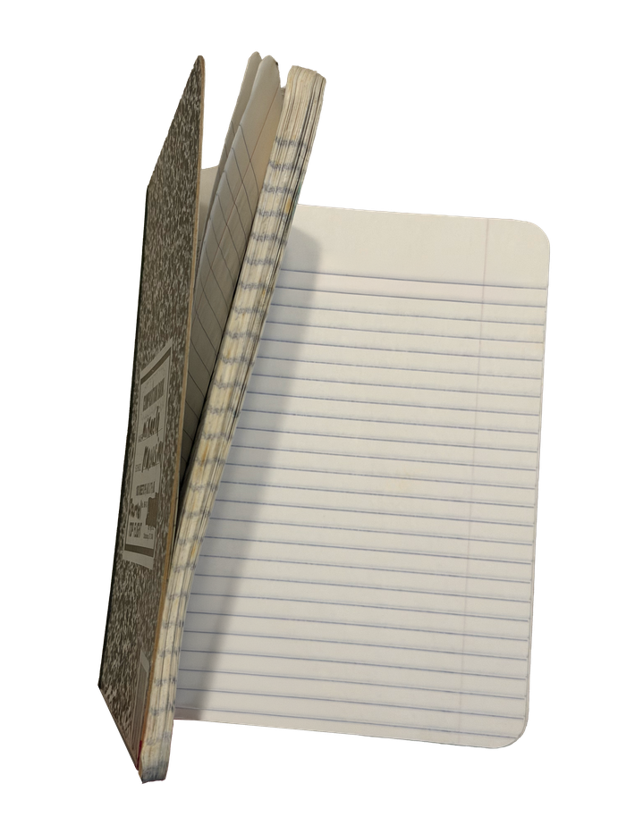
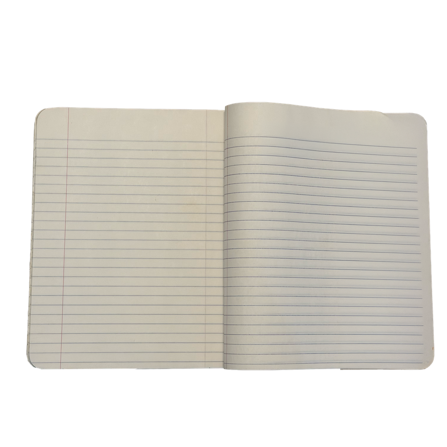
the four photos behind the opening
the book opens like a flipbook.
i photographed my journal four times: closed, lifting, half open, open. the site flips through those four shots. a real book catches and fans as it opens, and that little stutter is what makes it read as paper.
// work index: reuses the book-opening frame sequence var root=mobile?'assets/tabletop/mobile/':'assets/tabletop/'; var frames=reduce?[spread]:[root+'book-closed.png', root+'book-slightly-open.png',root+'book-half-open.png',spread]; ... function show(){ frame.src=frames[step];step+=1; if(step<frames.length){timer=setTimeout(show,mobile?110:130);return;} ... } Promise.all(frames.map(function(src){var img=new Image();img.src=src; return (img.decode?img.decode():Promise.resolve()).catch(function(){});})).then(show);
script.js, the work index opening, excerpt
the whole flipbook is a few lines.
that's the frame loop, verbatim. if your device asks for reduced motion, the sequence collapses to the last frame and the book is simply open. the craft shouldn't cost anyone their comfort.
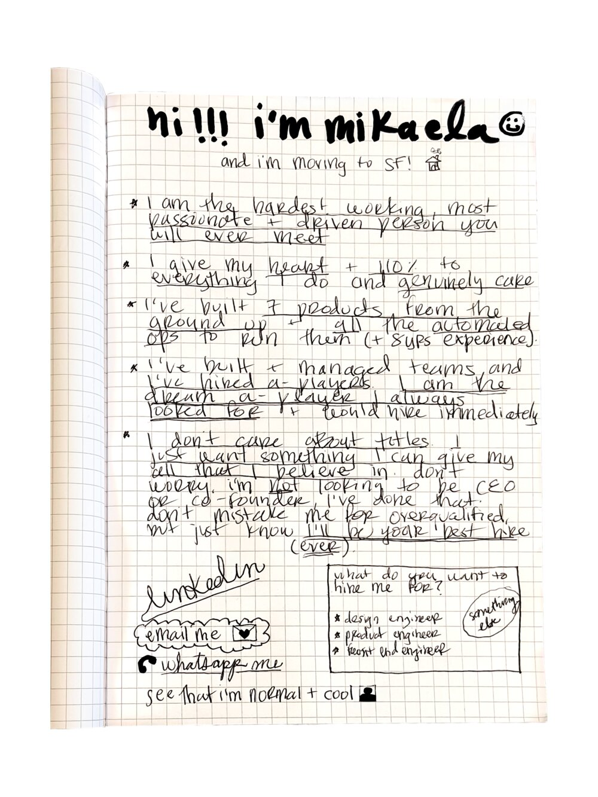
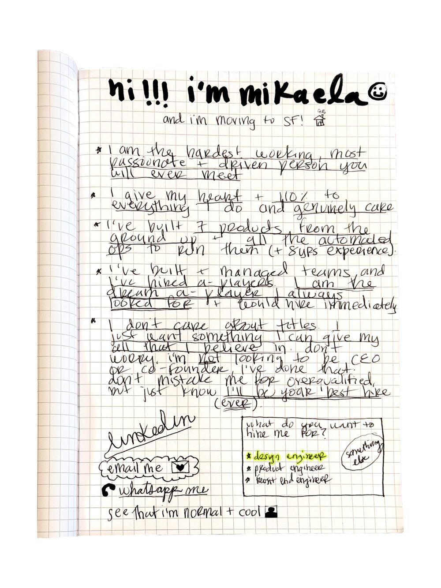
the note at rest, and with "design engineer" highlighted
every highlight is a stroke i traced by hand.
each link on the note, and each role i'd take, has its own marker stroke. hover and it wipes in left to right, the way a hand would draw it. it wobbles past the word on purpose. a clean rectangle would have looked like software.
// the note slides off the book in four held steps var noteFrames=[ {transform:'translate3d(0,0,0) rotate(0deg)'}, {transform:'translate3d(-2px,28%,0) rotate(.25deg)',offset:.28}, {transform:'translate3d(2px,67%,0) rotate(-.2deg)',offset:.66}, {transform:'translate3d(0,108%,0) rotate(0deg)'} ]; var noteMoves=noteStack.map(function(layer){ return layer.animate(noteFrames, {duration:560,easing:'steps(4,end)',fill:'forwards'});});
script.js, lifting the note off the journal, excerpt
no framework, and even the easing is set on purpose.
no react, no build step, no library. one html file, one stylesheet, one script, and the browser's own animation api. even the note leaving the book runs in four held steps with a two-pixel wobble, so it moves like a stop-motion object instead of sliding like an interface panel.
every color and texture here comes from something i made or kept.
painting pink #e80756
sampled from my painting. every page sits on it.
paper #FBF6EA
warm, the color of a page that's been kept.
ink #22303a
blue-black ballpoint. no pen is pure black.
b-mce ("mikaela")
an adopted handwriting font for the margin notes. my own hand is in the note and the journal.
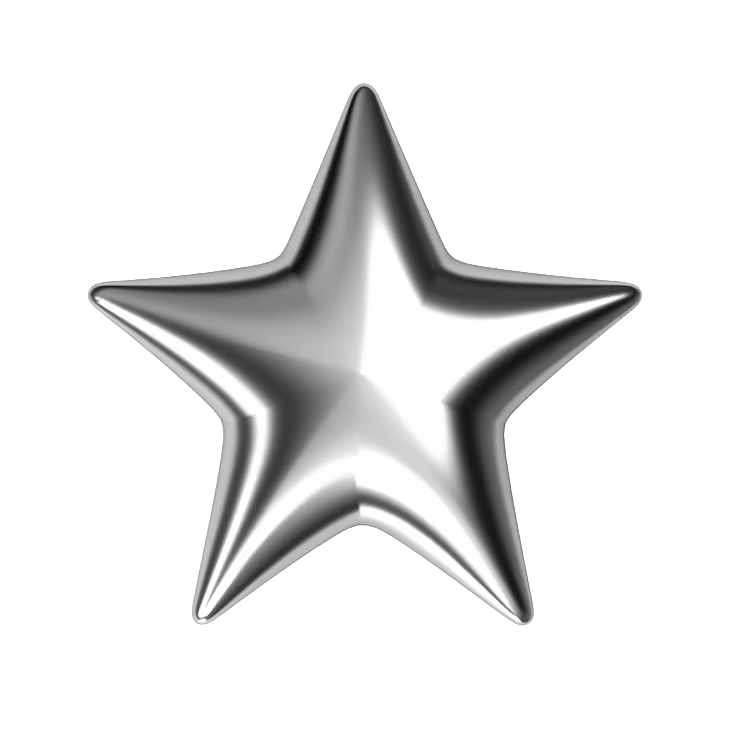
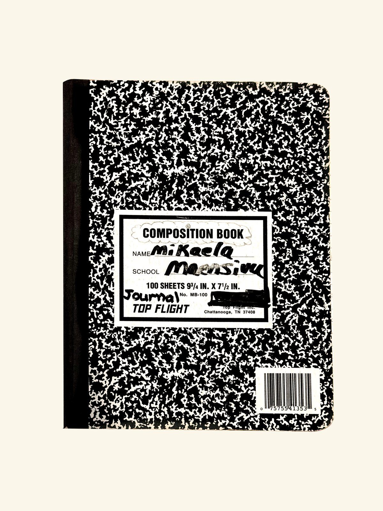
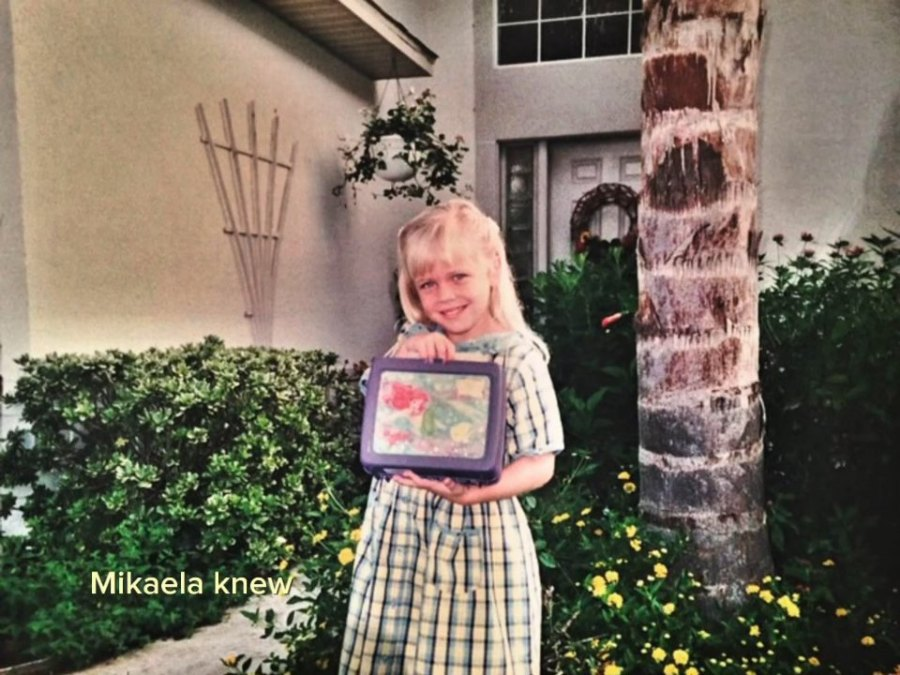
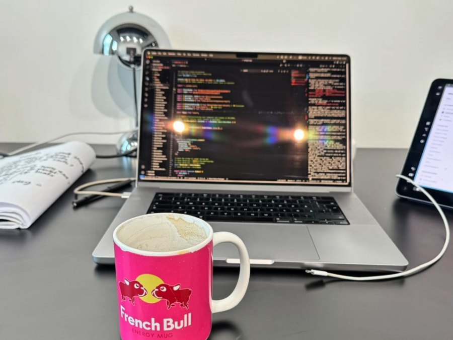
voice has been the cornerstone of my work since 2023. a voice carries more of a person than anything you can read: the warmth, the timing, the pauses, the way someone actually thinks out loud. people get it instantly. so when i wanted you to really know me, i didn't write you another page. i built you a conversation.
tap "talk to me" on the homepage and you'll hear me, in first person. it's meant to feel like running into me at a coffee shop: warm, direct, a little dry, happy to sit in a pause while you think. after it answers, it turns the conversation around and asks about your company, your team, the hardest problem on your plate. that part is just me. i'm curious about people.
i've built voice into every company i've been part of since 2023. at winged, your double introduces you in your own voice. at find funding, investors can talk to the financial model and get answers straight from it. this one is the smallest version of that idea, and it speaks in mine.
live in the browser. no app, no sign up.
i was making things long before i knew design was a job. this is the same hand, years apart.
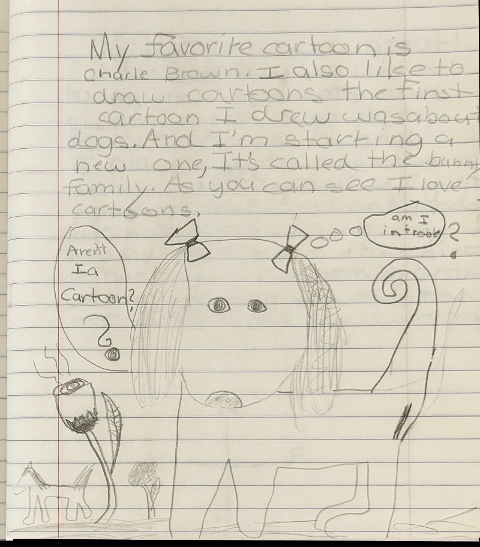
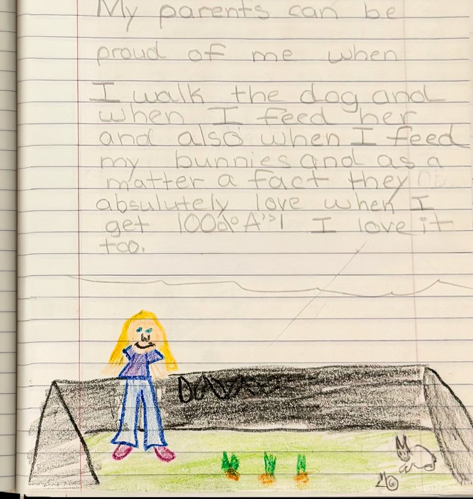
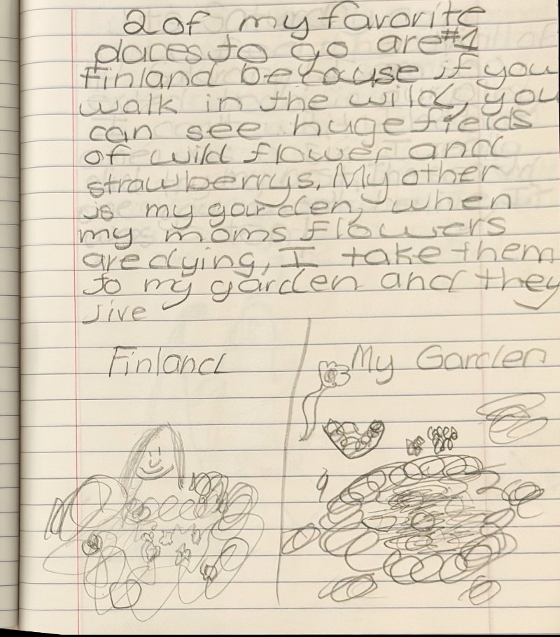